The Once a Week Chef is a year-long, once a week cooking adventure for those looking for a little inspiration in their kitchen.
It’s easy and understandable for people to fall into a cooking rut at any time. They know what they like and what they can make well enough. Life gets busy, so they stick to a rotation of the tried and true.
Cooking, and food in general, should be fun, but when you’re stuck in a cooking rut, it can become a task you dread rather than look forward to.

My own cooking rut befell me as the COVID pandemic spiked and I found myself with an unemployment check and an abundance of free time. While the world was making sourdough, I was making the standbys. I soon put that free time to use, though, and convinced a few friends to embark upon a cooking challenge with me.
That cooking challenge was one of the few bright spots during my summer quarantine. I found a well-cooked meal can ease the sting of not being able to visit your favorite restaurants or transport you to far away destinations that you can currently only dream about visiting again someday. It gave me something to do and to plan for each week, and challenged me to try things I never would have made on my own or even thought myself capable of. This mini-challenge served as the inspiration for this project.
The goal of The Once a Week Chef is to inspire home cooks to try something new once a week for a whole year by giving them a weekly theme and prompt on which to base a recipe and a place to document their dishes. At the end of their year long challenge, users will have 52 new tried and tested recipes and the satisfaction of having tried something out of their comfort zone for a whole year.
Branding was a critical first step in setting the tone of my project. I began the process by creating a moodboard to establish the style I was hoping to achieve.

From there, I explored type choices that would give me the fun and whimsical, hand-drawn vibe I was looking for. I compiled a few that were appealing to me, then started sketching out some logo options utilizing them.

The ideal type treatment became clear, but preferences on the logo options were mixed. After several rounds of revisions and feedback, I finally settled on a logo that provides a strong idea of the brand, speaks to the nature of home cooking, and gives direction for the styling of the book to come.
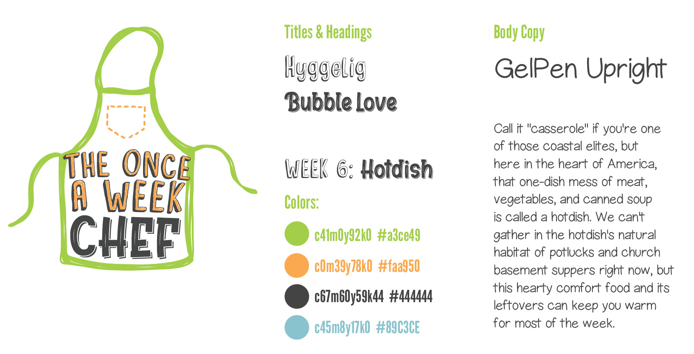
Print publications have always been a passion for me, so it seemed important that my solution should be in book format.
I started by researching styles of cooking, different regional cuisines, ingredients, and cooking techniques to compile a schedule of 52 engaging themes. I then had to research each one more in depth in order to write a succinct yet entertaining introduction to it as well as a unique and interesting fun fact.
I wrote in a light-hearted and sarcastic tone aiming to keep people engaged, laughing, and eager to continue participating in the project week after week.

Each page has an illustration that accompanies the theme. Some, like specific dishes or ingredients, had obvious solutions, while others for the more abstract concepts required thinking outside the box.
I used an Apple Pencil and an iPad running Astropad to draw everything directly in Illustrator. I then roughly colored in my illustrations and some key text elements using the same setup directly in InDesign.

When laying out the pages, I wanted to incorporate the feeling of the logo with a handwriting font, sketched text boxes, and scribble colored text.
Aside from the weekly themes, I created recipe pages for documenting each dish, an introduction page with instructions for the book, a table of contents, and a wrap-around cover.
Cookbooks and the written recipe hold a special place in many kitchens, so I wanted to create something that could stand out on the cookbook shelf. I wanted the final product to be a binder so that additional recipe pages could be added but needed it to be nicer than a typical binder.
My first mockup was for sizing purposes and used a cardboard box as a makeshift cover. The binder insert element means the pages need to be smaller than the cover, so this was useful for figuring out exact page dimensions.


I’ve always been interested in including handmade elements in my design work, so I took this opportunity to learn some bookbinding. I took a well-timed MCAD Continuing Education class in casebinding and was able to transfer those skills into creating a blank second prototype that is a close representation of the final product. I used this version to determine final measurements for the wraparound cover and inside liner.
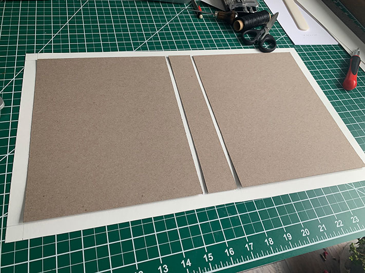
 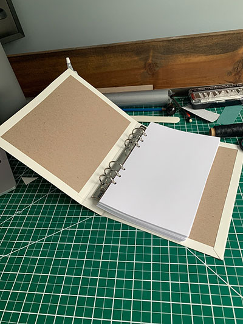
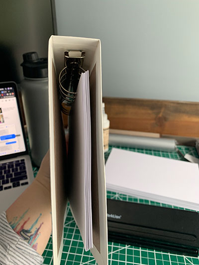
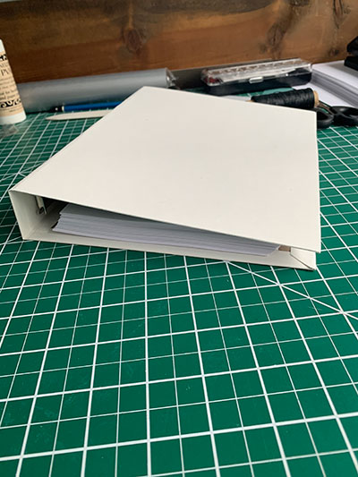
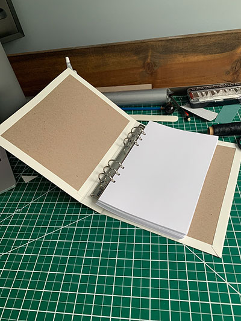
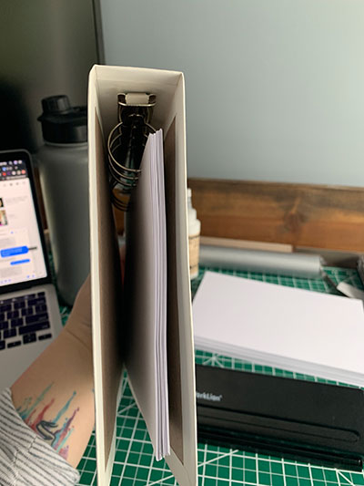
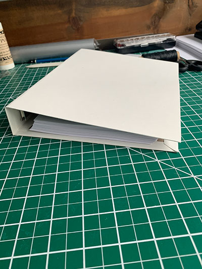
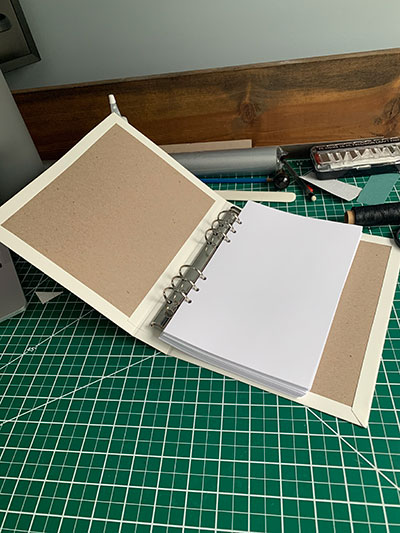
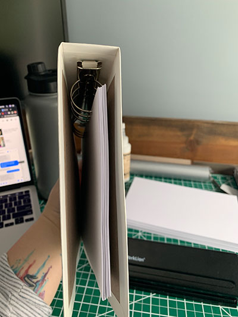
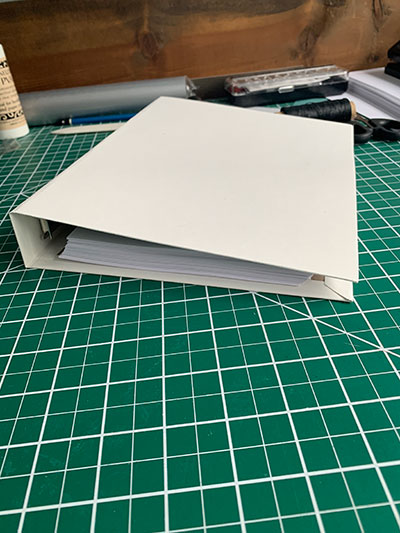
The final book cover is printed on a waterproof and tear-proof paper so the book will hold up to some wear and tear in the kitchen. The pages are printed on a card stock so each page has some weight to it and any writing on the recipe pages won’t bleed through.
I began the process of building the website by making wireframes of each page I wanted to have. These gave me somewhere to start with figuring out what content and assets I would need.
Rather than mocking up the whole website, I just did two pages. My book has a pretty clear style that I wanted to mimic in the website, so once I was able to establish that in my mockups, I didn’t need to do the entire website.
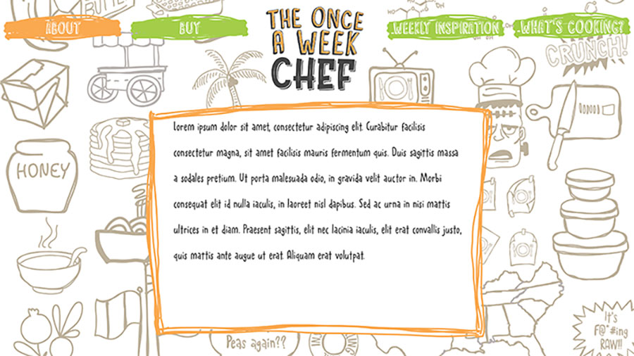
This project was begging for some sort of social/web aspect, so I decided to utilize a hashtag that will allow users to share what they’ve made on Instagram and connect with others doing the challenge.
The website provides some general information about the book, collects users’ shared photos into one gallery, and provides some extra suggestions for each week’s theme for those who want it.
Tools
- InDesign
- Illustrator
- Astropad
- iPad & Apple Pencil
- Laser Printers
- Bookbinding Tools
- Adobe XD
- HTML
- CSS
- Javascript
- GitHub Pages
- ScrollMagic
- Flickity Gallery
- FormSubmit
- Curator.io
- Google Forms
- Google Docs